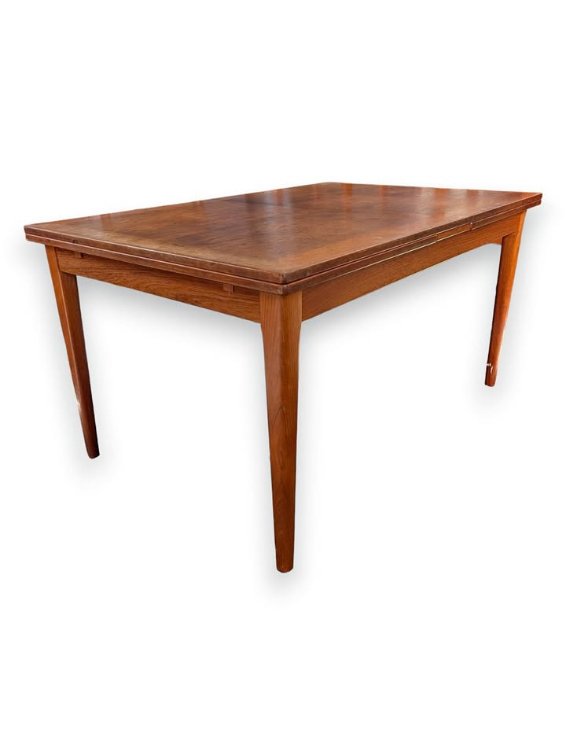
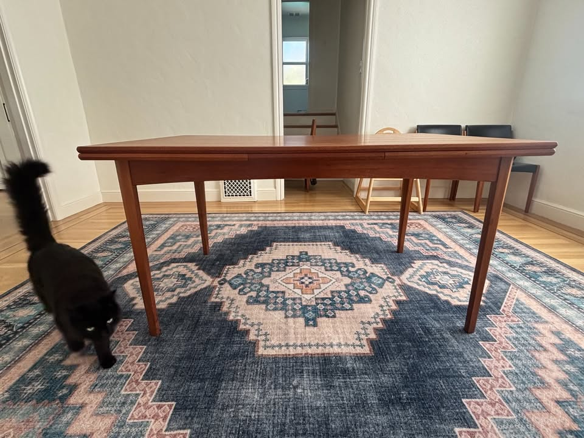
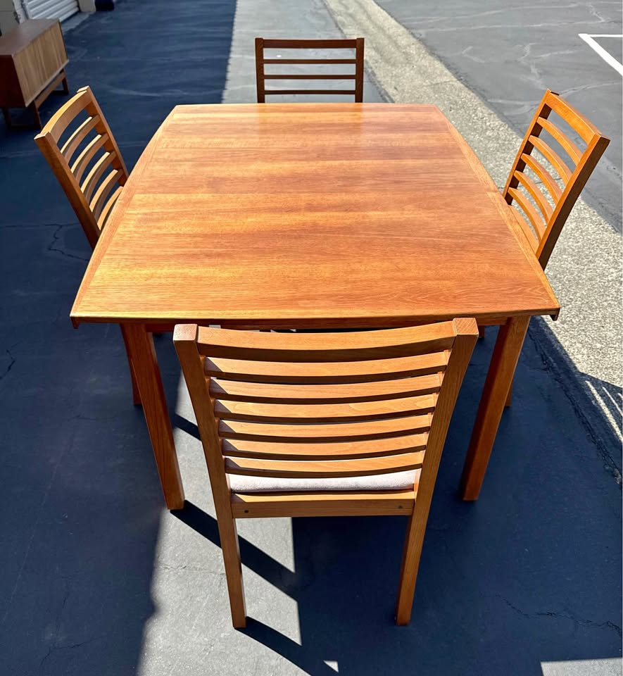
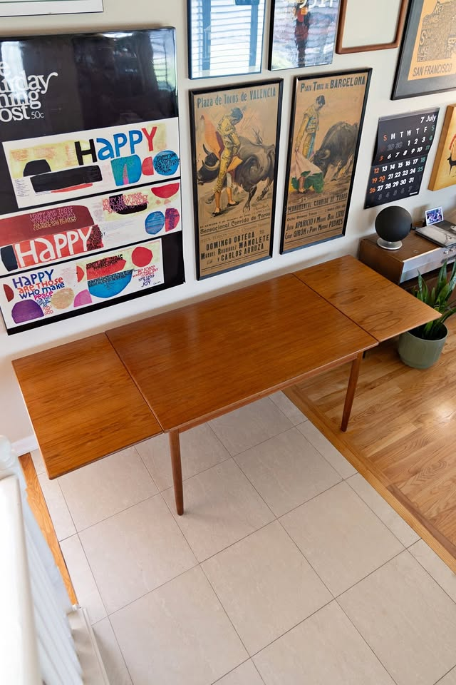

⚡ Look at right away
- 🆕 A genuinely new table, one day old: San Mateo, $1,000, 55" → 94¼". Four square tapered legs in a clear in-room photo, matching-wood draw-leaf photographed pulled out, good condition, and the seller delivers within 50 miles. It is the longest four-leg table on the board under $1,600 and the first new qualifying find in weeks. No maker’s stamp, so ask for an underside photo — but go and see it. Peninsula, ~30 minutes.
- ✅ The Emeryville caveat is resolved — and it comes with four chairs. The same seller has a second listing for the same 94" table, same $950, this time photographed assembled in daylight with four matching teak chairs included. That was the one thing missing yesterday. Confirm which listing you’re buying, and pin the price down — the description still says “Asking $1250”.
- ⚡ The SF Ansager $950 expires in five days (Sep 11). Refinished, 93" confirmed, priority maker, four legs, $50 SF delivery. Still the only turn-key priority-maker table. Its companion four-chair post is live again through Sep 19, so a one-stop pickup is back on. Nothing suggests it will be reposted.
- ⚠ Palo Alto’s $580 whole room expires Sep 12 — six days. Table plus six teak chairs, excellent condition, but only 87".
- ⚠ The San Rafael Ansager $800 is now nine days up with the length still unstated. Re-verified live, stamped, four square tapered legs, photographed fully extended, running to Sep 27. Call, don’t message — and ask for the open length first.
- A stable run, unlike the last one. All eight picks from yesterday re-verified live and unchanged — no losses, no price moves. Both Craigslist and Marketplace were re-run in full. New disqualifications: the Vallejo walnut extendable at $395 (64" extended — twenty inches short) and the McIntosh of Kirkcaldy $1,850, SF (U.K. import, like its $1,450 sibling).
Budget $1,000–$2,000 (table alone) · extends to ≥84" · Danish teak/walnut/rosewood · four legs (no pedestal/trestle)
Tables · in budget

🏆 #1 — Skovby · 102½" · six chairs included
Skovby Walnut Extendable Dining Table + 6 Chairs
$1,600 (table + 6 chairs — table alone ~$700–$1,000)
★★★★★5 / 5 value
A Skovby — a priority Danish maker — reaching 102½" on four clean square tapered legs, plus six chairs, for $1,600. Net the chairs out at $100–200 each and the table lands around $700–$1,000. It is still the only named Danish workshop on the board that also solves the chairs.
Maker/origin: Skovby — Danish (priority maker) · Redwood City, CA (Peninsula, ~40 min; dealer PlaceMakers Inc, San Carlos, weekdays 8–4) · listed a week ago
Size: 55" long × 35½" wide × 28½" high → 102½" extended on two pull-out extension sections in matching wood (seats 10–12 open)
Base: four square tapered legs — clearly visible in the listing photo, classic Danish, no pedestal or stretcher · Condition: used – good; wear consistent with age and use; the seller notes the chairs have some staining
✓ Clears every rule: priority Danish maker, matching-wood pull-out leaves (not metal), four tapered legs (not pedestal/trestle — visually confirmed), extends to 102½" (18½" past the 84" floor), in budget even before the chairs are netted out, click-verified active this run at $1,600. ⚠ Two things to check in person: the listing says "walnut-toned wood" rather than solid walnut — ask whether the top is solid or veneered; and the chair upholstery is stained, so budget ~$200–300 to recover six seats.
View listing →

🌟 #2 — stamped Ansager for $800 · call first
Ansager Møbler Danish Teak Extendable Dining Table
$800
★★★★½4.5 / 5 value
A labelled and stamped Ansager Møbler — the priority Danish maker — for $800, photographed fully extended on four square tapered legs. The seller notes these fetch $4,000 restored. Still the cheapest genuinely-Danish table on the board and the only stamped priority maker under $900. It would be a flat 5/5 if the listing said how long it actually gets.
Maker/origin: Ansager Møbler — foil label reads "6823 Ansager · Made in Denmark", underside stamped 00944 3613 (priority maker) · San Rafael, CA (North Bay, ~35 min) · posted Aug 28, live through Sep 27 · also cross-posted on Marketplace at the same $800
Size: still not stated — two integrated pull-out extension leaves that store beneath the main tabletop; photographed fully open. Ansager tables of this pattern run ~54" closed with 19½" leaves, i.e. ~93" extended — and the SF Ansager below states 53" → 93" for the same design, which is the closest corroboration available
Base: four square tapered legs — visually confirmed in both the closed and extended photos; no pedestal, no trestle, no stretcher · Condition: good — the seller states typical surface wear and prices accordingly · delivery available
✓ Clears the hard rules: solid Danish teak by a stamped priority maker, matching-teak pull-out leaves that self-store (not metal), four tapered legs (not pedestal/trestle — visually confirmed), in budget at $800, click-verified active this run on Craigslist. ⚠ The extended length is still unconfirmed by the seller — treat the 84" floor as inferred, not proven. The top also has real surface wear, so budget an oiling or a light refinish. Now nine days up in a tier that usually clears in three: call, don’t message — and ask for the open length first.
View listing →

⚡ #3 — the no-work Ansager · expires Sep 11
Danish Modern Teak Draw-Leaf by Ansager Møbler
$950
★★★★½4.5 / 5 value
A confirmed Ansager Møbler, freshly refinished to like-new, 93" with its dimensions actually stated — the one thing San Rafael still can’t give you. It remains the only turn-key priority-maker table on the board, and it now expires in five days.
Maker/origin: Ansager Møbler — "Made in Denmark" (priority maker) · SF Mission District (~35 min) · posted Aug 12, live only through Sep 11
Size: 53" × 35½" → 93" extended on two hidden matching-teak draw-leaves (each +20"; seats 6 closed, 10 open) · 29" high
Base: four straight legs — confirmed in the listing photos (legs unbolt for transport) · Condition: like-new, newly refinished (hand-rubbed oil); SF delivery $50, Bay Area $60+
✓ Clears every rule: Made-in-Denmark solid teak by a priority maker, matching-teak draw-leaves (not metal), four legs (not pedestal/trestle — visually confirmed), extends to 93", in budget, click-verified active this run at $950. ⚠ The two stored leaves are a slightly lighter hue than the top (common on draw-leaf tables) — and the Sep 11 expiry is now five days out. Good news since last run: this seller’s four-chair post is back up and live through Sep 19, so a one-stop pickup is possible again.
View listing →

#4 — Made in Denmark · 93" · holding at $600
Vintage Danish Modern Teak Extension Table
$600 (was $800)
★★★★½4.5 / 5 value
A stamped Made in Denmark teak extension table that opens to 93" with the dimensions spelled out, holding at $600 into a sixteenth week. It slips behind the two Ansagers only because the workshop is unnamed and the top has more visible wear — but on dollars-per-inch nothing here beats it.
Maker/origin: Danish Modern, Made in Denmark (unnamed workshop) · San Rafael, CA (North Bay, ~35 min) · listed 15 weeks ago
Size: 53" × 35" closed → 93" extended on matching-teak pull-out leaves (seats 8–10) · 29" high · 25¼" chair clearance under the apron
Base: four legs — confirmed in listing photos · Condition: used – good; solid and sturdy; some darker spots and light top wear consistent with age
✓ Clears every rule: solid teak with teak veneer, matching-wood leaves (not metal), four legs (not pedestal/trestle — visually confirmed), extends to 93", far under budget, click-verified active this run at $600. ⚠ The darker spots and surface wear on the top are more visible here than on the other picks, and the photos are all garage shots — and after sixteen weeks unsold there is almost certainly room under $600.
View listing →

#5 — the cheapest whole room · expires Sep 12
Vintage MCM Teak Dining Set — Table + 6 Chairs
$580 (table + 6 chairs)
★★★★★5 / 5 value
A full solid-teak set — table plus six matching teak chairs — for $580, on four clean tapered legs, in excellent condition. Since the budget is for the table alone, six chairs (worth ~$600–1,200) come essentially free. Only the 87" extension keeps it out of the top three. It expires Sep 12.
Maker/origin: Vintage Danish-style teak (unbranded) · Palo Alto, CA (Peninsula, ~45 min) · posted Aug 9, live through Sep 12
Size: 51" × 33" closed → 87" extended on a matching-teak pull-out draw-leaf (seats 6–8) · 29" high
Base: four tapered legs — confirmed in listing photos · Condition: excellent; no damage, deep scratches or water rings; smoke/pet-free home; delivery available
✓ Clears every rule: solid teak, matching-wood pull-out leaf (not metal), four legs (not pedestal/trestle — visually confirmed), extends to 87" (past the 84" floor), far under budget, click-verified active this run at $580. ⚠ Two knocks: unbranded, and 87" is the shortest of the picks — eight seats would be snug at 33" deep. Also note the Sep 12 expiry, six days out.
View listing →

🆕 NEW this run · #6 — 94¼" · one day old
Mid Century Dining Room Table — 55" → 94¼"
$1,000
★★★★½4.5 / 5 value
The only genuinely new qualifying table in weeks. Listed a day ago in San Mateo: 94¼" extended — longer than either Ansager — on four square tapered legs, clean in-home photos, and the seller will deliver within 50 miles. The single reason it isn’t a 5 is that there is no maker’s stamp and the seller won’t swear it’s teak.
Maker/origin: believed 1960s Danish, teak — the seller says plainly there is no stamp on the underside and they cannot confirm it · San Mateo, CA (Peninsula, ~30 min) · listed one day ago · door pickup or dropoff; delivery for a small fee within 50 miles
Size: 55" long × 35¼" wide × 28½" high → 94¼" extended (comfortably seats 8, and the deepest top on the board after Emeryville)
Base: four square tapered legs — clearly visible in the full-room photo; no pedestal, no trestle, no stretcher · Condition: used – good; "great condition, normal wear from use"; the pull-out leaf is photographed extended and is matching wood
✓ Clears every rule: solid wood with a matching-wood draw-leaf (not metal), four tapered legs (not pedestal/trestle — visually confirmed in a clear in-room shot), 94¼" extended, in budget at $1,000, and click-verified active this run. ⚠ The maker is unproven — ask for a photo of the underside and of the leaf mechanism, and check the top in raking light. At $1,000 it is priced $400 above the San Rafael 93" for one extra inch, so see them both before you commit; but it is a day old, dimensioned, and delivers.
View listing →

✅ #7 — caveat resolved · now with four chairs
Vintage Danish Teak MCM Dining Set — Table + 4 Chairs
$950 (table + 4 chairs; description still says “Asking $1250”)
★★★★4 / 5 value
Yesterday’s biggest caveat is gone. The Emeryville table that had no assembled photo turns out to have a second listing from the same seller — same 54" × 40", same 94" extended, same $950 — but photographed set up in daylight with four matching chairs included. That takes it from a 3 to a 4: you can now see the table, and four chairs come with it.
Maker/origin: Vintage Danish modern teak; the earlier listing’s brand field reads generically "Century" — still no maker’s stamp shown · Emeryville, CA (East Bay, ~25 min) — dealer Anthony Cox, 359 ratings; delivers around the Bay Area, Napa, Sonoma and Lake County · listed 3 weeks ago
Size: 54" × 40" closed → 94" extended on two hidden matching-teak leaves that slide out from underneath · 29" high · 40" is the widest top on the board
Base: four corner legs with an apron — now confirmed in assembled daylight photos, not just the disassembly shots · Condition: good vintage; minor wear consistent with age · public meetup or door pickup
✓ Clears every rule: solid teak, matching-teak slide-out leaves (not metal), four legs (not pedestal/trestle — now confirmed assembled), 94" extended, in budget, click-verified active this run. ⚠ Two things remain: the price is still quoted two ways — header $950, description "Asking $1250" — so get a firm number before you drive; and no Danish maker’s stamp. Note the same seller’s table-only listing is also still live at $950, so confirm which one includes the chairs.
View listing →

#8 — 87" of Danish teak for $550
Mid Century Draw-Leaf Dining Table — Danish Teak
$550
★★★★4 / 5 value
The cheapest table-only pick on the board, and it clears the length gate: 87" extended, solid Danish teak, matching leaves that nestle under the top, four tapered dowel legs. Two things hold it at four stars — it is honestly described as "fair", and at 32¼" deep it is the narrowest top here by three inches.
Maker/origin: Danish teak draw-leaf — no maker’s stamp named (dealer @walnutcreekmodern) · Walnut Creek, CA (East Bay, ~35 min) · listed a week ago · door pickup
Size: 48⅓" long → 87" extended · 32¼" wide · 29" high · leaves nestle under the main tabletop
Base: four solid teak tapered dowel legs — stated in the listing and visible in the photo; no pedestal, no trestle, no stretcher · Condition: used – fair; structurally sound, with some scratches and scuff marks · first come, first served
✓ Clears the hard rules: solid Danish teak, matching-teak nesting leaves (not metal), four tapered legs (not pedestal/trestle — visually confirmed), extends to 87", well under budget, click-verified active this run at $550. ⚠ Two real reservations: 32¼" is narrow — measure a place setting plus a serving dish before you commit; and "fair" is the weakest condition grade on the board, so see the top in person or ask for raking-light photos. At $550 there is room in the budget for a refinish.
View listing →

#9 — 96" · six clean matching chairs
Midcentury Danish Teak Draw-Leaf Table + 6 Chairs
$1,995 (+ tax — table + 6 chairs; table alone ~$800–$1,400)
★★★★4 / 5 value
The longest complete room on the board: 96" extended on four tapered legs, with six matching Benny Linden slat-back chairs in clean, stain-free cream fabric — no recovering project, unlike the Skovby set. Netted of chairs the table is $800–$1,400. What holds it to four stars is the "+ Tax" and the missing maker’s stamp.
Maker/origin: Vintage teak, described as Danish — no maker’s stamp named for the table; the chairs are Benny Linden (Danish-modern style, not Danish-made) · Hayward, CA (East Bay, ~40 min) · listed 4 days ago · delivery available for a fee
Size: 57" × 35" × 28.5" closed → 96" extended on two integrated matching-teak leaves that slide out from under the main top · photographed fully extended with all six chairs
Base: four tapered legs — clearly visible in the extended photo; no pedestal, no trestle · Condition: used – good; solid wood chair frames, clean stain-free upholstery
✓ Clears the hard rules: solid teak, matching-teak integrated slide-out leaves (not metal), four tapered legs (not pedestal/trestle — visually confirmed fully extended), 96" extended, and in budget on the table-alone maths. ⚠ Two things to settle before you drive: the seller is a dealer asking "$1995 + Tax", so the out-the-door figure clears $2,100 — negotiate or treat the ceiling as breached; and the listing’s "Pieces Included" field now reads "Table" while the description still promises six chairs, so confirm the chairs are in the deal. Same dealer as the tile-top Dyrlund we disqualified.
View listing →
How they compare in one line each:
Redwood City Skovby $1,600 — priority maker, 102½", tapered legs, six chairs thrown in.
San Rafael Ansager $800 — a stamped priority maker for $800, if the length checks out.
SF Ansager $950 — refinished, 93" confirmed, zero work — but expires Sep 11.
San Rafael $600 — Made in Denmark, 93", best dollars-per-inch, more top wear.
Palo Alto $580 — cheapest whole room, excellent condition, but only 87" and expires Sep 12.
San Mateo $1,000 — NEW: 94¼", four tapered legs, clean, delivers, but unstamped.
Emeryville $950 — 94", widest top, four chairs, now photographed assembled.
Walnut Creek $550 — 87" of Danish teak at the lowest price here, but narrow and "fair".
Hayward $1,995 — 96" plus six clean chairs, but "+ tax" and no stamp.
New disqualifications this run: Vintage Mid Century Walnut Extendable, $395 (cut from $495), Vallejo — the title itself says 64" extended: twenty inches short. McIntosh of Kirkcaldy butterfly-leaf, $1,850, SF — U.K. import, same dealer as the $1,450 McIntosh oval. Also re-confirmed DQ: the Dyrlund $1,700, Hayward (ceramic-tile inlay top and a trestle-style base), the Meredew $1,450 and butterfly-leaf teak $1,280 / $1,680 (all U.K. imports), the SF oval teak $650 (cut from $850 — pedestal), and the Gangsø $850 (~63").
Ruled out (standing): E. Valentinsen rosewood ($1,175, Walnut Creek) — twin-pedestal. Gudme Møbelfabrik rosewood ($700, SF) — twin-pedestal. Gudme Møbelfabrik ($550, Santa Rosa) — round on a pedestal. SF "Danish mid century modern extendable" ($700 and $725) — pedestal, stated in the title. SF "Modern danish teak oval" ($500) — dual-pedestal trestle. Vejle Stole Møbelfabrik ($1,995, SF) — priority maker but only 76" extended. Sonoma Skovby ($800) — twin cylindrical pedestal, peeling veneer. John Keal walnut ($975, Santa Rosa) — round on a slatted pedestal. Ansager Møbler square draw-leaf ($650, cut from $750, Walnut Creek) — priority maker, real price drop, but only 67" fully extended. Richmond teak-and-oak ($1,075) — still no dimensions. SF "Teak Dining Table with Pull Out Leaves" ($1,695) — 83", one inch short. Roseville teak ($1,500) — no maker, no dimensions, ~2 hours out. Millbrae ($799) — 100" but arched trestle base. Los Gatos ($1,000) — 78". El Cerrito ($1,150, cut from $2,500) — two separate gate-leg tables. Fremont 1970s draw-leaf ($450) — made in Singapore, no dimensions. Novato built-in-leaf ($1,750) — trestle. Albany draw-leaf ($1,000) — 67". Alameda ($1,250) — 72" max, laminated top. Modesto teak ($520) and Sacramento MCM teak ($680) — no dimensions / trestle, and outside the drive radius. Benny Linden table ($1,290, Sacramento) — outside the radius. Stockton chevron-top sets ($1,250 and $1,255) — parquet tops, not Danish. Stanley "Walnut" drop-leaf + 6 chairs ($750, cut from $850, SF) — American maker, drop-leaf. D-Scan suite ($2,200, Santa Rosa), Stickley Walnut Grove ($3,000), Castlery "Seb" ($900, San Jose), West Elm ($200), Hoft Home ($465, Sausalito) and Crate & Barrel "Tate" ($1,000, Portola Valley) — over budget, current-production retail, or both. Oakland oval ($1,750), Refinished Skovby ($2,950), SF round McIntosh ($2,200), San Jose "large conference" teak ($2,999), Sonora sunburst ($2,000, round), Børge Mogensen drop-leaf ($3,200), Stickley walnut ($3,500), Martinez ($180, too small), and SF tables at $2,450, $2,500 and $2,800 — over or under spec. Heywood-Wakefield ($895) — American. Meredew, McIntosh, Nathan, Remploy, G-Plan and other UK imports.
Watchlist: the Gudme Møbelfabrik walnut expandable, $2,050 (Folsom — priority maker, 63¼" → 101½", original table pads, delivery included, $50 over the ceiling) sits outside the 40-mile Marketplace radius and the SF Bay Craigslist region, so it still cannot be re-verified from here. Last seen unchanged at $2,050 on a listing running to ~Sep 11 — that is now days away. If it matters, search Marketplace from a Sacramento location by hand this week.